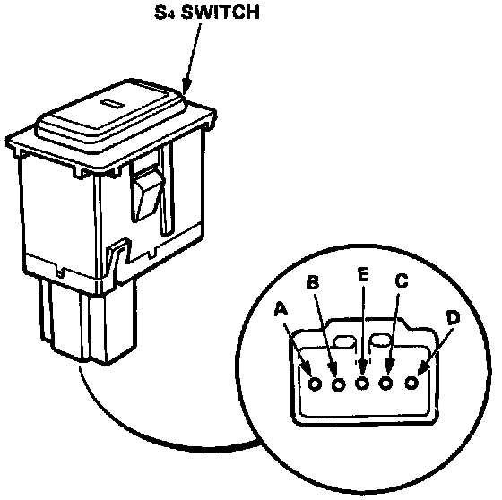
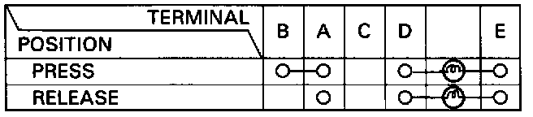
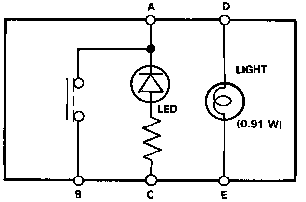

Transmission Mode Switch: Testing and Inspection

S4 Switch Test
1. Remove the center console.
2. Disconnect the switch connector and remove the S4 switch.


3. Check for continuity between the terminals by pressing and releasing the switch button according to the table.